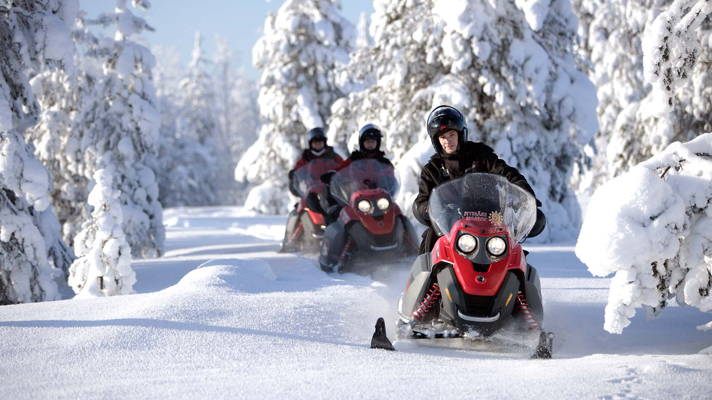
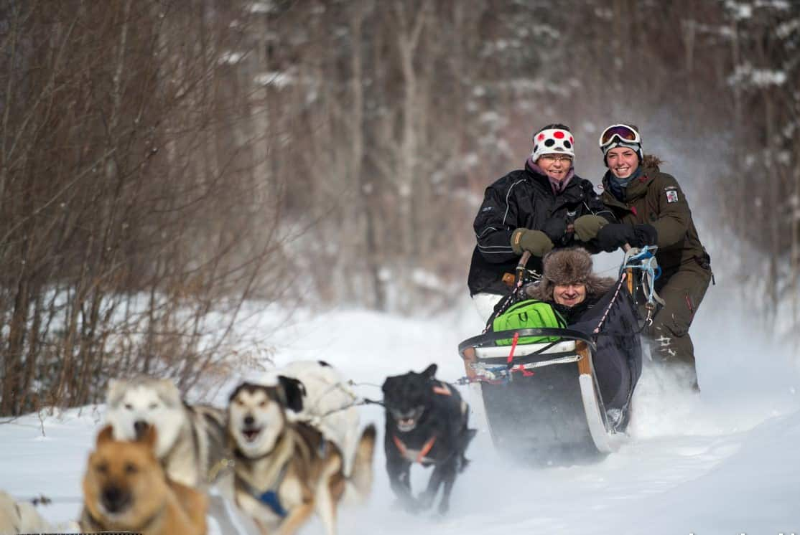

Looking for winter activities in Park City? Look no further, we have 5 unforgetable activites
that you will love!
Winter Activities
Ready to catch some of the greatest snow on earth? We can help you!! Park city Mountain ski and snowboard
has everything you need. It ranges from moderate paths, all the way to the thrill seekers that
are wanting to hit the jumps and rails. Not to mention how beautiful the area is.
Address: 1345 Lowell Ave, Park City, UT 84060

Cant get enough of park city mountains? Head over to Red Pine Adventures and rent a snowmobile to
go off the paths to create your own fun and activites.
Address: 2050 W White Pine Canyon Rd, Park City, UT 84060

Take snow tubing to a new level! We promise you that you have never seen tubing like this. For a
small price, you can head up to Soldier Hollow Nordic Center located near Midway UT and have a fun
filled day with family and friends sliding down the massive hills. Warning, you may have to much
fun so be aware.
Address: 2002 Soldier Hollow Lane, Midway, UT 84049

Feeling daring? You can actually go backcountry dog sledding.. Yes, you heard that correctly. You can
spend the day exploring the beautiful mountainers while being pulled by dogs. If this sounds like
something you would like todo, Luna Lobos Dog Sledding can take care of you.
Address: 4733 W Browns Canyon Rd, Peoa, UT 84061

Thow on a jacket and head down to the historic pack city mainstreet. This is a shopping expeience that
you will enjoy. You can expect some of the best restuants and unique foods that Utah has to offer. Dont
forget to stop and grab some pizza from Main Street Pizza & Noodle.
Address: 530 Main St, Park City, UT 84060